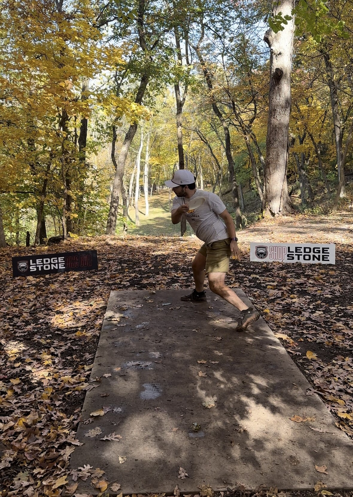

Welcome to Zach Trotto's personal website! I hope you enjoy your experience.
One of my main hobbies is mountain biking. I have been doing this for around 5 years, and have also gotten my dad into it.
Another one of my favorite hobbies is disc golf. When I came to UMD I started playing as something just to do, but quickly got very into it.